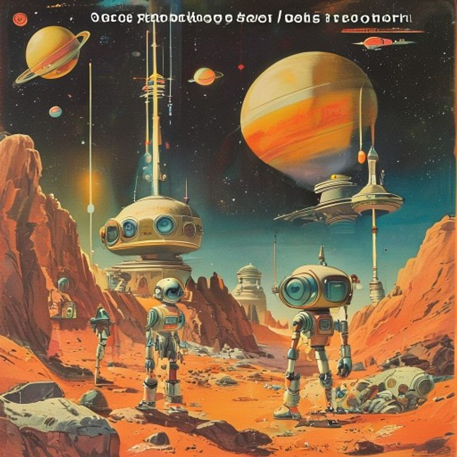

Шестой модуль

Пролог
«Искра» пробивалась сквозь центр великой энергетической паутины, нити которой экипаж прослеживал от самого Лабиринта и мёртвых башен Некрополя. Магнитные импульсы, распутанные на планете сияний, больше не казались случайным шумом. Они превратились в чёткую, почти музыкальную партитуру.
— Навигатор показывает, что мы пришли, — сказал Ветрос, сверяясь с мерцающими гироскопами. — Но тут ничего нет! Только пустота и… подозрительно ровный слой космической пыли.
— В космосе не бывает «ровных слоёв», если только их не подметали роботы-уборщики, — проворчал Драгос, проверяя давление в термокамерах. Из его выхлопных патрубков вырвалось лёгкое колечко пара. — Мои цилиндры чувствуют жажду работы, а поршни от дежурства уже начинают покрываться инеем. Где обещанный центр сети?
Аквас прижал ладонь к обзорному стеклу. Его внутренние жидкие индикаторы плавно изменили цвет с тревожно-фиолетового на чистый лазурный.
— Смотрите внимательнее. Пустота не пуста. Она пропитана давлением, как глубина океана.
Шар Забытых Проектов
Материос сделал шаг вперёд. Его корпус, собранный из тончайших нитей энергии и гибкой материи, затрепетал, вступая в квантовый резонанс с окружающим пространством. Он протянул манипулятор к темноте.
— Здесь не просто древняя станция, — тихо произнёс он. — Здесь покоится то, что нас всех создало и соединило.
Вдруг космическая пыль пришла в движение, повинуясь невидимому сквозняку. Словно с великого космического зеркала сдули сценический занавес. Перед «Искрой» возник исполинский идеальный шар из матового серого сплава — того самого, из которого были построены башни Некрополя и старый маяк. Но этот шар не был мёртвым. Он дышал.
По его поверхности пробегали сиреневые и золотистые вспышки. Каждая вспышка отзывалась в узлах био-вотчкаров.
— Поразительно, — прогудел Террос, чья монолитная броня вибрацией откликнулась на гул шара. — Мои сейсмодатчики регистрируют глубокую пульсацию. Это место удерживает вместе все стихии: и воду, и огонь, и камень, и воздух.
— И материю, — добавил Материос, улыбнувшись. — Мою нить.
Стыковка прошла бесшумно. «Искра» мягко прикоснулась к шлюзовому захвату огромной сферы. Внутри их встретил не мрак заброшенных комплексов, а мягкий, тёплый свет, напоминающий полдень в яблоневом саду на Земле. Никакой пыли, никакой ржавчины. Панели управления сияли, словно их выключили только вчера.
Тайна «Искры»
В центре главного зала возвышалась пятигранная кристаллическая пирамида, на гранях которой высечены были символы всех пяти био-вотчкаров.
— Это не просто архиватор, — сказал Аквас, с изумлением разглядывая схемы на стенах. — Это огромная фабрика калибровки. Здесь восстанавливали баланс планет, когда те начинали «болеть», как та планета-океан или увядающий Эрадус.
— А мы, получается, космическая ремонтная бригада? — иронично прищурился Ветрос. — А я-то думал, мы первооткрыватели и романтики дальних трасс!
— Одно другому не мешает, — хмыкнул Драгос. — Без хорошего ремонта никакой романтики не выйдет, одна турбулентность и прогоревшие клапаны.
Материос подошёл к пирамиде и положил руку на пятую грань. Пирамида отозвалась глубоким, чистым звуком, похожим на удар гигантского камертона. В воздухе развернулась голографическая карта, но не той галактики, которую они знали. На ней горели тысячи точек, соединённых тончайшими нитями.
И тут произошло то, чего никто не ожидал.
Центральный компьютер сферы заговорил. Голос был спокойным, металлическим, но с едва уловимыми нотками умного и доброго старого профессора:
— Приветствую вас, хранители стихий. Настройка системы «Искра» завершена на сто процентов. Все пять модулей био-адаптации объединены.
— Настройка завершена? — переспросил Террос, нахмурив титановые надбровные дуги. — Но мы ведь просто летели по варп-сигналам!
— Вы проходили испытания, — ответил голос. — Океан научил вас сочувствию. Эрадус — стойкости. Лабиринт — единству. А узел времени — терпению. Но вы забыли об одной важной детали. Посмотрите на ваш корабль.
Голограмма изменилась. На экране появился прозрачный чертёж «Искры». В самом её центре, под мощной бронёй реактора, где, как считалось, находился обычный двигатель, светилась шестая, пустая ячейка.
— Шестая ячейка? — прошептал Ветрос. — Но стихий всего пять! Огонь, Вода, Земля, Воздух и Материя!
Компьютер тихо щёлкнул позитронным реле, и голографическая карта расширилась, показывая мрачный сектор за пределами исследованной Галактики, откуда исходил странный, прерывистый сигнал.
— Шестой модуль не принадлежит стихиям, — произнёс голос древнего ядра. — Он принадлежит Разуму — тому, кто их объединяет и направляет. И сейчас этот модуль подаёт сигнал бедствия с самого края Вселенной…
Кто же или что находится в той безымянной тьме, ожидая прибытия «Искры»?